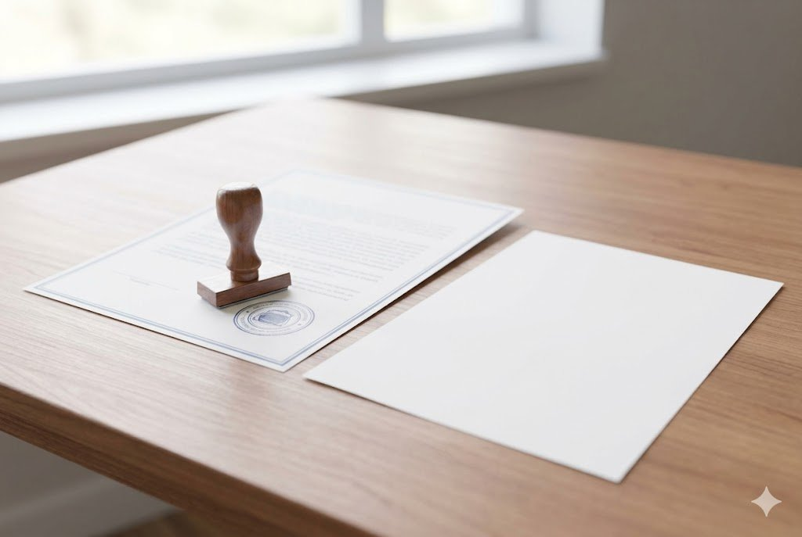

Everyone makes mistakes, but a past arrest or conviction can keep following you long after the matter is resolved. Even after you have served your sentence or had charges dropped, a criminal record can make it harder to find a job, rent a home, or move forward with your life. Fortunately, Louisiana law allows many people to have their records expunged. Attorney Christopher Stahl has handled hundreds of criminal cases across North Louisiana and can help you determine whether you qualify and guide you through the process.
What Does an Expungement Actually Do?
In Louisiana, an expungement removes a record of arrest or conviction from public view — it does not destroy the record entirely. Expunged records are sealed and hidden from most employers, landlords, and the general public, but they remain accessible to law enforcement and certain professional licensing boards. The key benefit is that, in most situations, you are no longer required to disclose the arrest or conviction. It is also worth knowing that having charges dropped does not erase the arrest automatically; you generally still have to petition the court to expunge it.
Who Qualifies for an Expungement in Louisiana?
Eligibility depends largely on whether your case ended in a conviction and, if so, whether it was a misdemeanor or a felony. If you were arrested but never convicted, you may petition for an expungement when the district attorney declined to prosecute, the statute of limitations expired, the charges were dismissed, a motion to quash was granted, or you were acquitted. If you were wrongfully convicted and later found factually innocent on appeal, both the arrest and conviction records may be expunged.
For convictions, waiting periods apply:
- Misdemeanors: You may petition five years after completing your sentence, probation, parole, or deferred adjudication, provided you have no felony convictions or pending felony charges during that period. Under Article 977 of the Louisiana Code of Criminal Procedure, you may generally expunge only one misdemeanor every five years — except a DWI, which can only be expunged once every ten years.
- Felonies: Under Article 978, a felony conviction may be expunged ten years after completing all terms of the sentence, as long as you had no other convictions during that period. Louisiana law generally limits felony expungements to one every fifteen years. If the conviction was set aside and the prosecution dismissed, the waiting period may not apply.
What Cannot Be Expunged
Not every offense is eligible. Misdemeanor convictions involving domestic abuse battery, stalking, and sexual offenses generally cannot be expunged. On the felony side, convictions for crimes of violence, sex offenses, domestic abuse battery, and certain drug offenses are typically excluded. If you are entering a first-time guilty plea, pleading under Article 894 (misdemeanors) or Article 893 (certain felonies) can preserve your eligibility for a later expungement — though violent crimes and sex crimes involving minors are not eligible to be pled under Article 893. Because the rules are detailed, the best first step is to review your specific record with an attorney.
The Expungement Process
The process begins with filing a petition in the parish where your arrest and conviction occurred. A judge then reviews the petition, and once it is signed, your attorney forwards copies to the appropriate local agencies. The Louisiana Bureau of Criminal Identification and Information then notifies state and federal databases. From start to finish, an expungement in Louisiana typically takes around six months. Before applying, you must have completed your sentence, paid all fines, and finished any required counseling, rehabilitation, or community service, with no charges pending against you.
How an Expungement Can Help Your Future
Sealing your record can open doors that a conviction tends to close. With an expungement, you generally are not required to disclose the arrest or conviction, which can make a real difference in employment and housing applications. An expungement may help you pass certain background checks, can keep your record out of view for many state licensing boards, and may ease bans on housing assistance such as Section 8. It can also support eligibility for federal student aid and college admissions. While an expungement is not an absolute guarantee in every context, it is a powerful tool for moving forward with a cleaner slate.